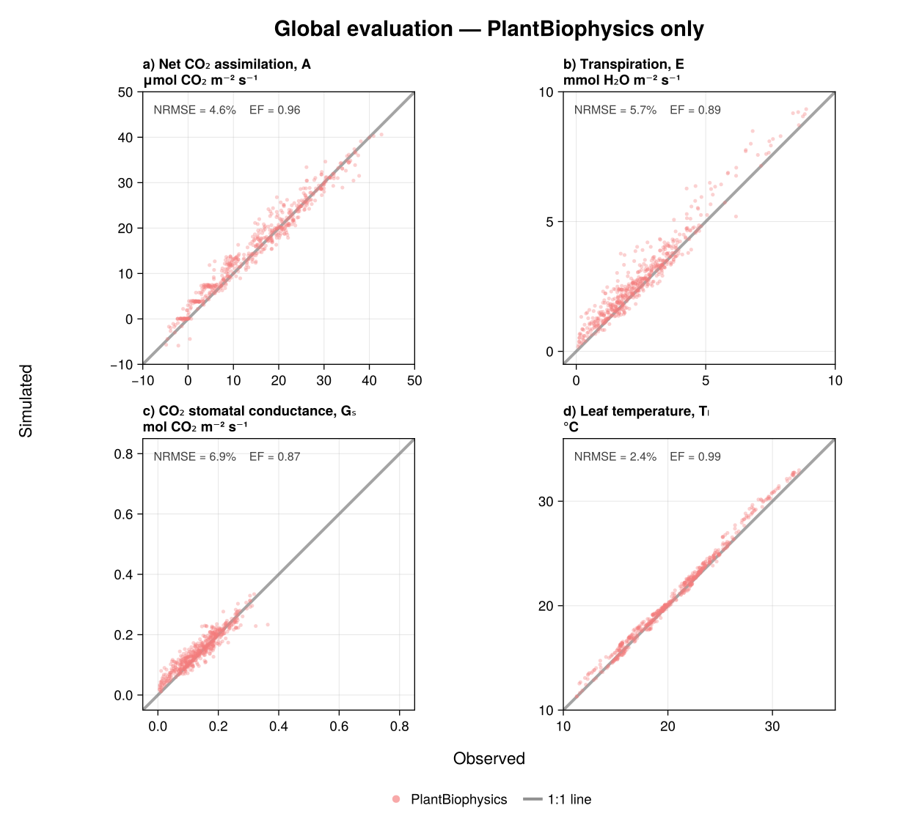
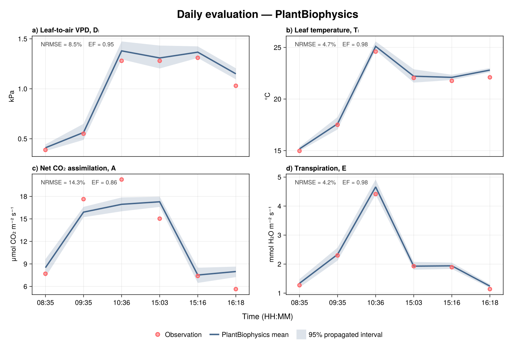
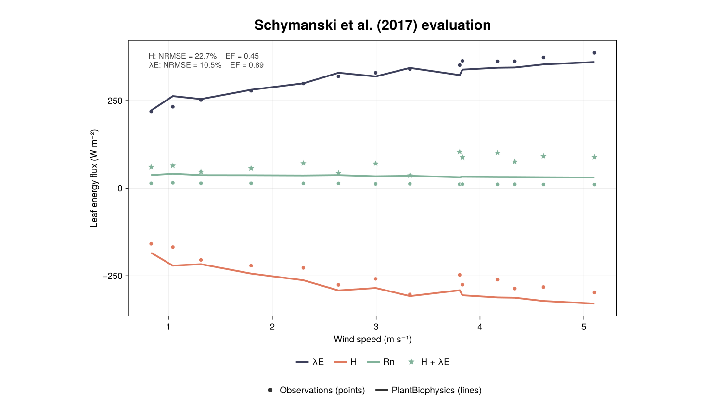

Model evaluation
This page compares PlantBiophysics simulations with empirical measurements used in the package paper. Only PlantBiophysics results are shown: the global figure deliberately omits the other models compared in the original paper.
Each panel reports the normalized root mean squared error (NRMSE, normalized by the observed range) and modelling efficiency (EF) for the current simulation. The same scenarios feed the figures and the automated regression tests, so the visual and numerical evaluations use identical inputs, parameters, filters, and unit conversions.
The tests compare the current NRMSE, RMSE, bias, normalized bias, and EF against the statistics from the main branch of the paper repository. Tolerances account for floating-point and dependency differences. The checks are one-sided: better model skill passes, while a meaningful loss of skill fails.
Global evaluation

The coupled FvCB–Medlyn–Monteith simulation is evaluated against the Tumbarumba gas-exchange measurements from Medlyn, Pepper, and Keith (2015). The paper's Ca > 150 ppm quality filter leaves 536 observations. Each observation is evaluated once; this avoids the duplicated timestamp matches in the historical paper workflow. The grey line is the 1:1 relationship.
Daily evaluation

This six-observation sequence is for tree 3 on 14 November 2001 in the same Tumbarumba dataset. The line is the mean of 2,000 uncertainty-propagation particles, and the shaded ribbon spans their 2.5th to 97.5th percentiles.
Measured stomatal conductance is forced in this scenario because these spot measurements do not provide the response curve needed to fit a stomatal model. The figure therefore evaluates the photosynthesis and energy-balance response conditional on measured conductance; it is not an independent validation of stomatal conductance.
Schymanski et al. (2017)

Points are observations and lines are PlantBiophysics simulations for the wind-speed experiment underlying figure 6a of Schymanski and Or (2017). The plotted fluxes are latent heat (λE), sensible heat (H), net radiation (Rn), and the observed energy sum (H + λE).
Measured stomatal conductance, radiative forcing, and chamber conditions are prescribed. This is consequently a targeted evaluation of the energy-balance implementation rather than a fully independent evaluation of the coupled leaf model. The source data come from the Schymanski_leaf-scale_2016 repository.
To reproduce only this panel, run the standalone Schymanski wrapper from the repository root:
julia --project=docs docs/src/models/schymanski.jlThe wrapper calls the same scenario as the numerical regression tests and the same plotting code as the complete documentation build; it does not maintain a second copy of the scientific computation.
Reproducing the figures
The SVG files are regenerated at the start of every Documenter build. Generation uses only the committed offline test fixtures. To regenerate the figures without building the rest of the documentation, first instantiate the docs environment with the same developed PlantSimEngine checkout used for package testing, then run:
julia --project=docs docs/figures/generate_evaluation_figures.jlThe Medlyn fixtures are distributed under CC BY 4.0. Their file identifiers, checksums, extraction history, and the provenance note for the Schymanski data are recorded in test/inputs/evaluation/README.md.